Wireshark
Ferramenta para analisar o tráfego de rede e ajudar a identificar atividades suspeitas ou problemas de comunicação.
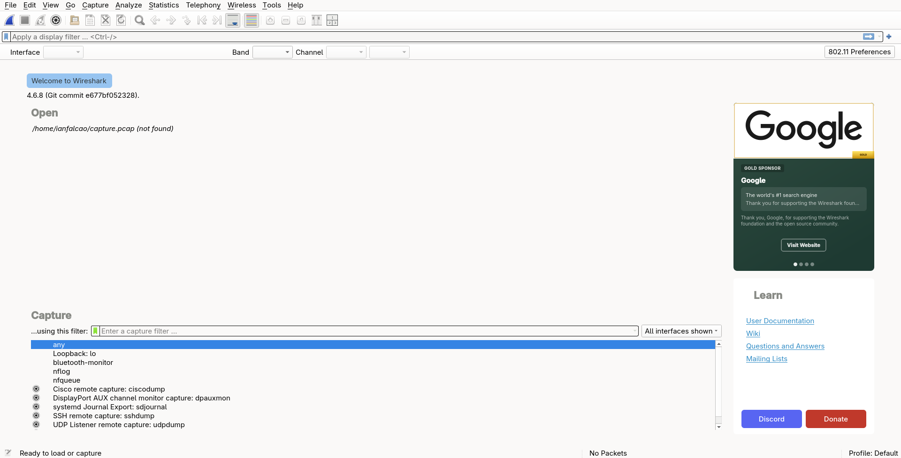
Conhecimento para proteger sistemas
Conheça ferramentas e ambientes utilizados para estudar, proteger e avaliar sistemas.
O Blue Team atua na defesa, no monitoramento e na resposta a incidentes.
Ferramenta para analisar o tráfego de rede e ajudar a identificar atividades suspeitas ou problemas de comunicação.

Plataforma que auxilia no monitoramento de sistemas e na identificação de eventos de segurança.
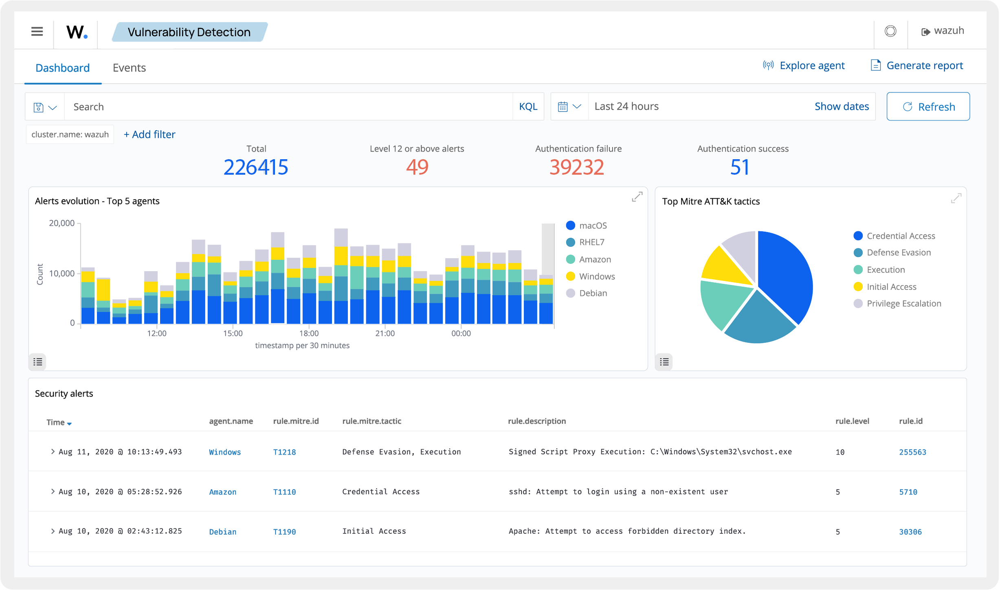
Ferramenta que analisa o tráfego de rede e gera alertas sobre atividades suspeitas.
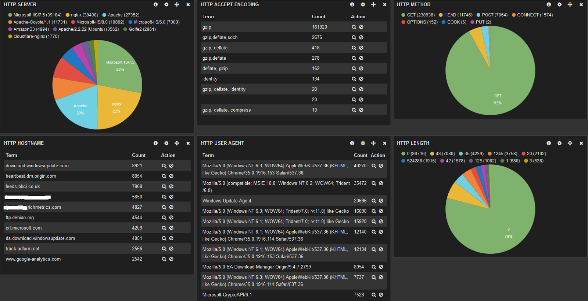
Antivírus de código aberto usado para verificar arquivos em busca de programas maliciosos.
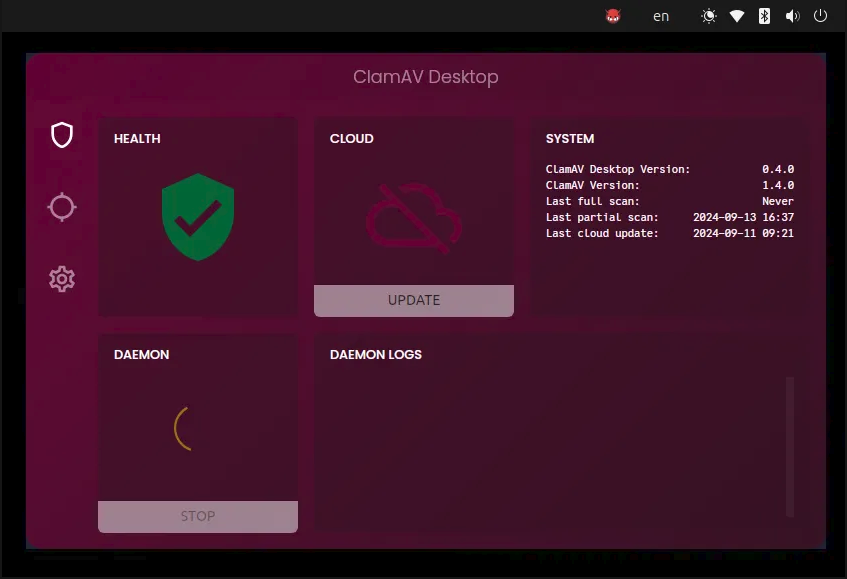
O Centro de Operações de Segurança é uma equipe ou estrutura que monitora sistemas, investiga alertas e responde a incidentes. Ele utiliza várias ferramentas de segurança.
O Red Team realiza avaliações e simulações de ataques autorizadas para identificar falhas.
Ferramenta que ajuda a descobrir dispositivos e serviços em uma rede e a identificar portas abertas.
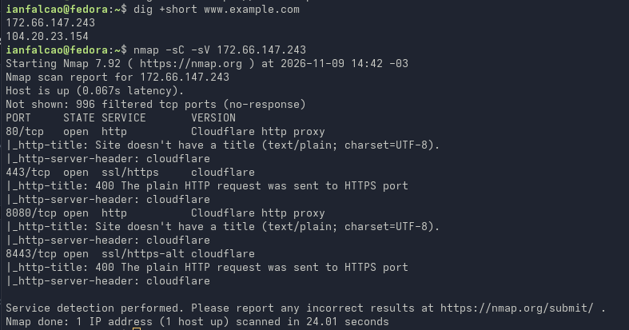
Plataforma usada em testes de segurança autorizados para verificar se vulnerabilidades podem ser exploradas.
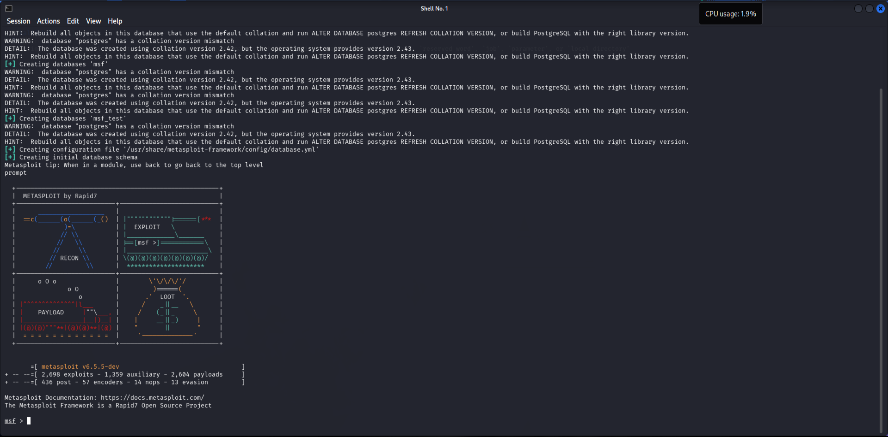
Ferramenta que auxilia na análise e nos testes de segurança de aplicações web.
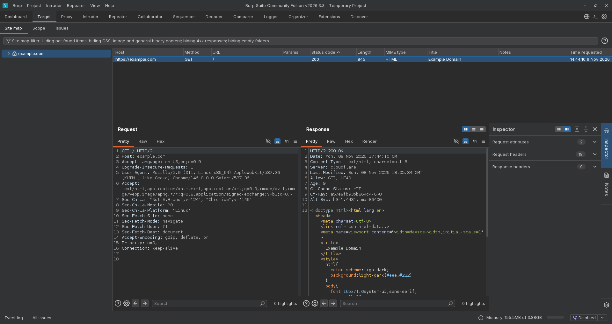
Ferramenta de código aberto que ajuda a identificar possíveis falhas em aplicações web.
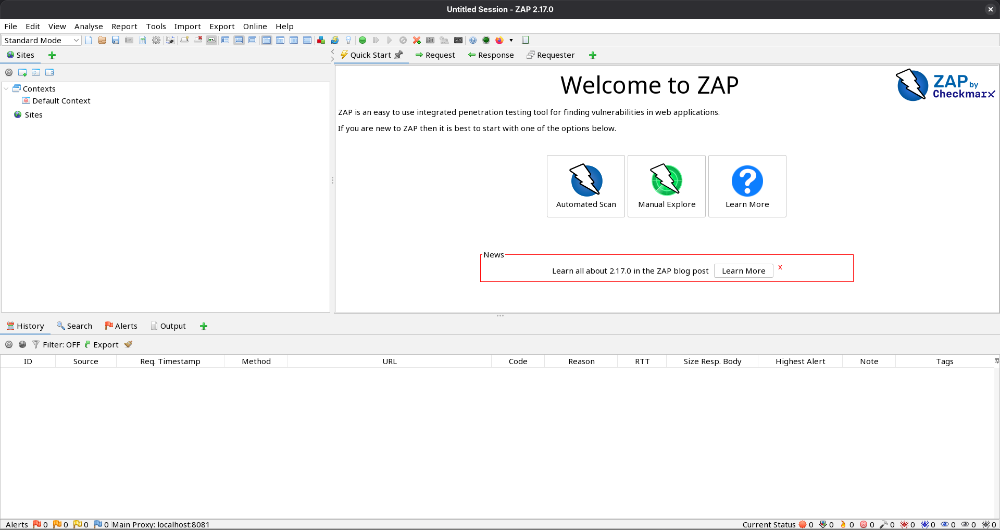
Ferramenta usada em auditorias autorizadas para avaliar a resistência de senhas.
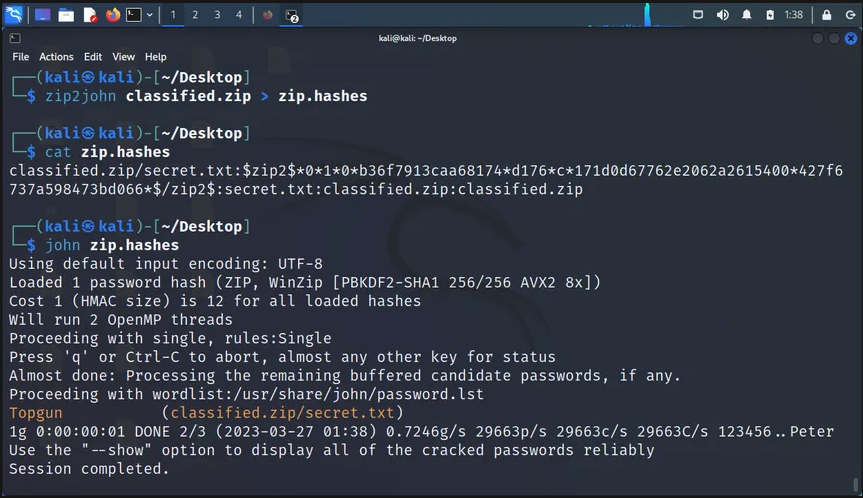
Programa que permite criar máquinas virtuais para praticar e testar sistemas em um ambiente separado. Pode apoiar estudos tanto de Blue Team quanto de Red Team.
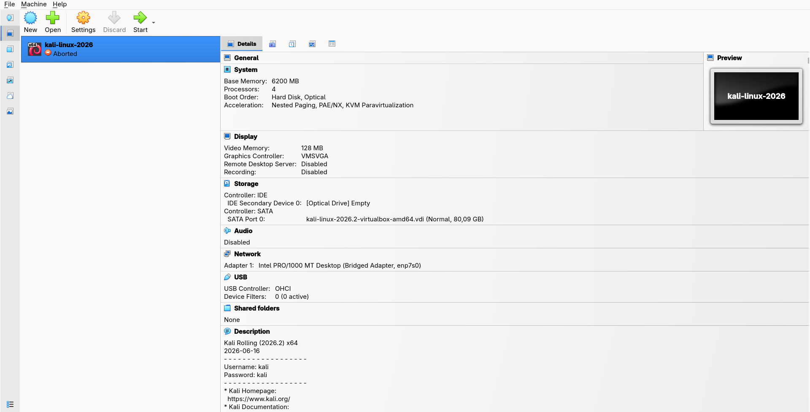
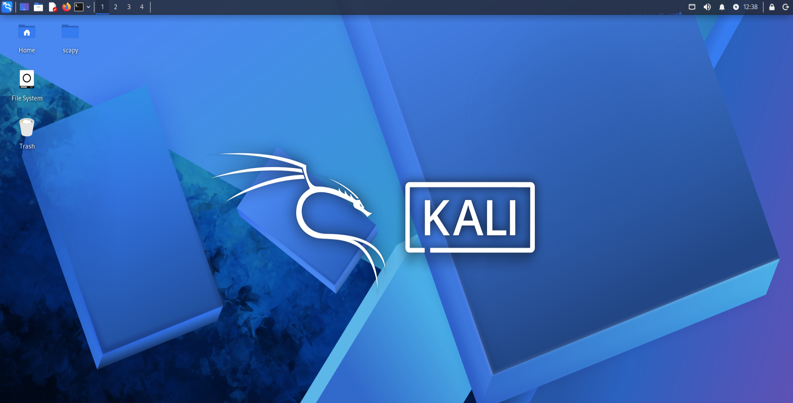
Wireshark e Nmap também podem ser utilizados por ambas as equipes, de acordo com a atividade.